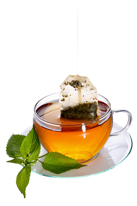

«Чай». К сожалению современного человека сложно удивить этим словом, не говоря уж о том, чтобы убедить его
увидеть в чае волшебный напиток или растение силы. К сожалению, для современного человека чай – это чаще всего
опускание чайного пакетика в стакан с кипятком и торопливое поглощение этой, с позволения сказать, жидкости без
всякого уважения, внимания, не говоря уж о каком-то ритуале или церемониале.
Хотя жаль. Потому как чай – это сила. Чай – это волшебство. Чай – это напиток, который при надлежащем подходе
меняет человеческую жизнь, делая нас более мудрыми, сильными, красивыми и здоровыми. Чай – это источник вдохновения. Чай – это целый мир, заслуживающий изучения и исследования.